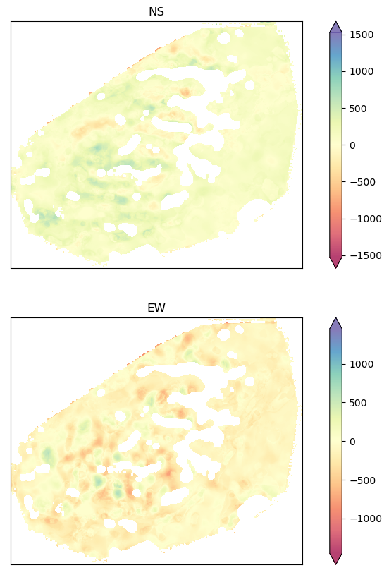

Stack Prepartion¶
This program collects velocity candiate points for time-series analysis
[3]:
from akhdefo_functions import stackprep
[4]:
stack=stackprep("data/georeferenced_folder/flow_xn/","data/georeferenced_folder/flow_yn/", "data/dem_aoi.tif",
print_list=False, start_date="20200101", end_date=
"20221111", output_stackedFolder="stack_data",VEL_scale="year" ,
xres=10, yres=10, Velocity_shapeFile=True, Resampling=True)
start_index: 0 Date 20220812-20220817-20220820.tif
end_index: 24 Date 20221006-20221008-20221016.tif
stacked optical velocity from: 20220812 to 20221016
No of Days 65
namesxn 24
exporting name list Done
Stacking image flowy folder started
No of days: 65
C:\Users\Mahmud\anaconda3\envs\kurd\lib\site-packages\akhdefo_functions\Stacked_Velocity.py:548: RuntimeWarning: Mean of empty slice
mean_x = np.nanmean(stackxlist, axis=0)/int(No_ofDays) * VEL_factor # (n rows by n cols array)
C:\Users\Mahmud\anaconda3\envs\kurd\lib\site-packages\akhdefo_functions\Stacked_Velocity.py:560: RuntimeWarning: Mean of empty slice
mean_y = np.nanmean(stackylistd, axis=0)/int(No_ofDays) * VEL_factor # (n rows by n cols array)
C:\Users\Mahmud\anaconda3\envs\kurd\lib\site-packages\numpy\lib\nanfunctions.py:1872: RuntimeWarning: Degrees of freedom <= 0 for slice.
var = nanvar(a, axis=axis, dtype=dtype, out=out, ddof=ddof,
{'driver': 'GTiff', 'dtype': 'float32', 'nodata': -32767.0, 'width': 1923, 'height': 1625, 'count': 1, 'crs': CRS.from_epsg(32610), 'transform': Affine(1.0000012039141082, 0.0, 454614.137607063,
0.0, -1.0000012039139252, 5611907.2112664515)}

Velocity Candiate points Collection process started
geometry VEL
SiteID
147 POINT (456089.138 5611902.211) 194.336136
148 POINT (456099.138 5611902.211) 202.565033
149 POINT (456109.138 5611902.211) 226.560349
150 POINT (456119.138 5611902.211) 235.383774
151 POINT (456129.138 5611902.211) 249.230850
outlier in the dataset is []
[ ]: